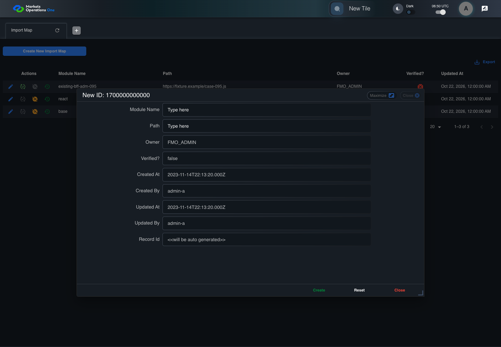
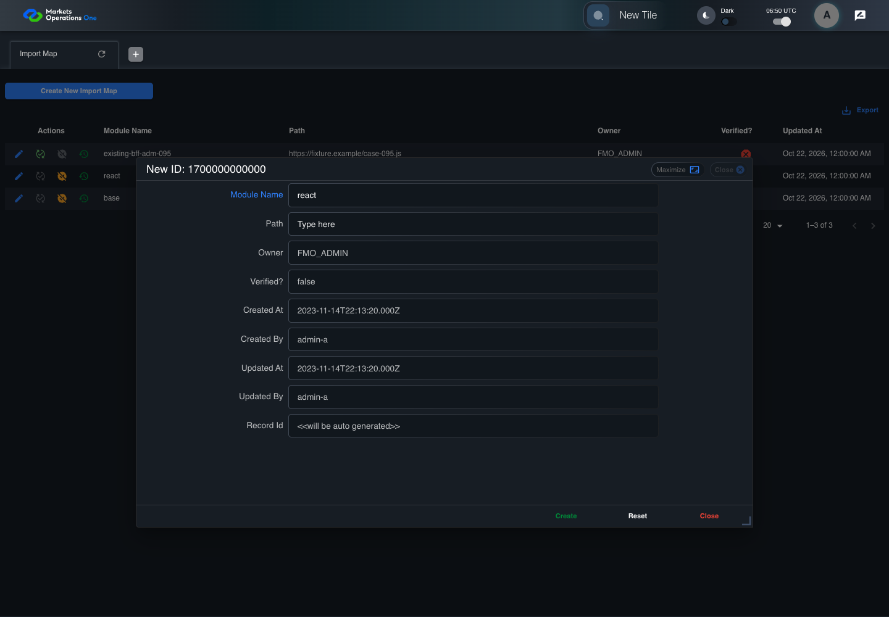
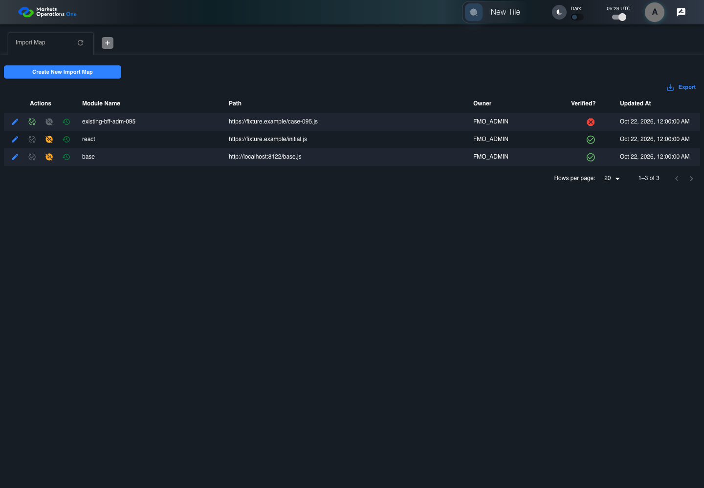
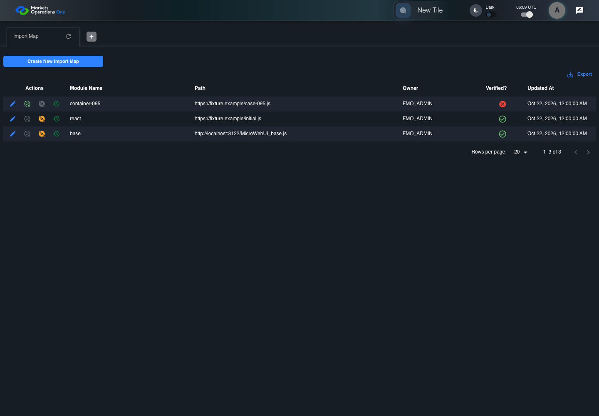
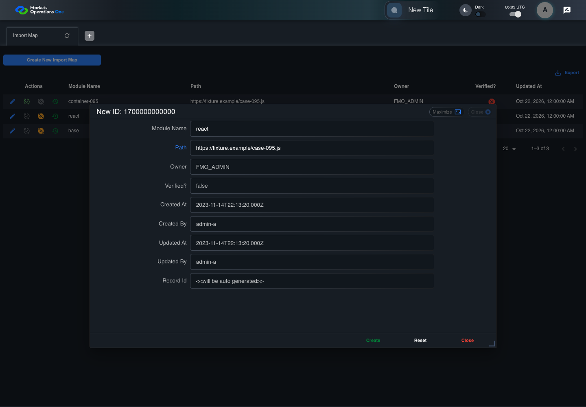
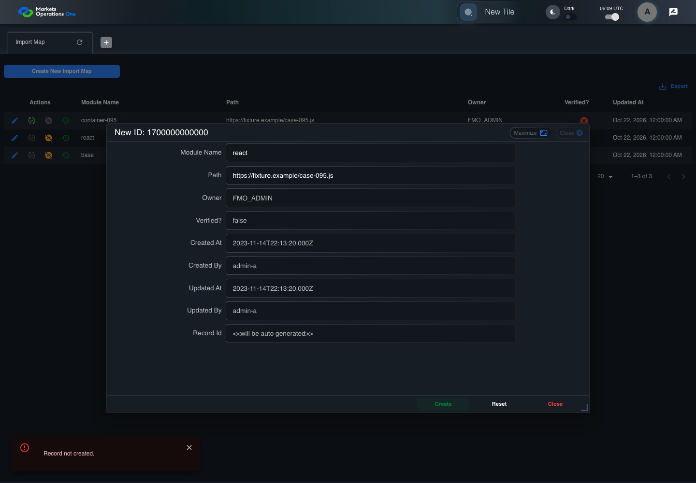

All canonical cases
BFF-ADM-095: Protect an existing import-map namespace from a reserved key collision Business acceptance remains unverified. Owner: unknown. Review the canonical definition and fixture limits before acceptance.
Latest local result: PASS Business acceptance: NOT_ESTABLISHED.
The latest local result describes execution. The historical definition review assesses the case design before execution.
Latest step screenshot evidence: COMPLETE . 13/13 canonical steps have execution screenshots.
Canonical Gherkin definition . Definition version: 2. SHA-256: d95973249e5e06f42cfc82c2ec6144b03a63f3886b50f0d4bc7cbe29695eec07.
Historical definition review (preflight): UNVERIFIED A definition review FAIL can coexist with local PASS. The definition failed preflight quality checks.
This historical review does not change the latest execution result. Resolve definition gaps before business acceptance.
Canonical Gherkin steps Feature: Admin URL security
@BFF-ADM-095
Scenario: Protect an existing import-map namespace from a reserved key collision
Given Admin A uses subject "admin-a" with role "FMO_ADMIN" in an isolated authenticated browser
And the controlled Import Map fixture records the initial grid rows and persisted values
And the controlled creation clock returns 1700000000000 milliseconds
And the baseline fixture data defines "Module Name" as "container-095"
And the baseline fixture data defines "Path" as "https://fixture.example/case-095.js"
And an existing Import Map record already has "Module Name" equal to "react"
When Admin A clicks the button labeled "Create New Import Map" on the Import Map administration page
Then the dialog titled "new ID: 1700000000000" is visible on the Import Map administration page
When Admin A fills the textbox labeled "Module Name" with "react" in dialog "new ID: 1700000000000"
And Admin A fills the textbox labeled "Path" with "https://fixture.example/case-095.js" in dialog "new ID: 1700000000000"
And Admin A clicks the button labeled "Create" in dialog "new ID: 1700000000000"
Then the alert with severity "error" in the portal snackbar contains the exact text "Record not created."
And the active-import-map response retains the initial "react" URL without modification Acceptance and evidence limits: NO_COMPLETE_REAL_APPLICATION_BINDING, CANONICAL_REVIEW_OR_EVIDENCE_UNRESOLVED.
Planned essential canonical frames: 3. Plan completeness requires separate review.
Latest attempt BFF-ADM-095 current BFF administration through actual UI PASS · application/run-072/bff-adm-095-current-bff-administration-through-actual-ui-19bb1c51cea1-attempt-1 · ACTUAL_APPLICATION_LOCAL_SERVICES
Actual current React and exact-current BFF admin controllers/services/JPA with actual migration DDL in disposable PostgreSQL. Controlled OUD/EMS2 identities and local Spring bootstrap. Fixture SQL seeds/mutates isolated records; service errors are actual database errors. Undefined agreed messages remain unresolved acceptance.
2026-10-22T06:50:31.672Z to 2026-10-22T06:50:40.673Z
Assertions and result · Artifact manifest · Exact run inputs and source hashes
Result SHA-256: bc24a67ba0482af94797570e6250f903b6b3a84c56b8f00193770b8709b8f462 Playwright trace
Machine observations Screenshot capture: CAPTURED. Named frames: 14.
Step screenshot evidence: COMPLETE. 13/13 canonical steps have execution screenshots.
Canonical step timeline Given Admin A uses subject "admin-a" with role "FMO_ADMIN" in an isolated authenticated browser
1. step-01 Visible state after step 1: Given Admin A uses subject "admin-a" with role "FMO_ADMIN" in an isolated authenticated browser
2026-10-22T06:50:36.436Z · 1440×1000a9b796cec1ab6d8d06956e6b4a171a649d4f045e9cf0a68532142fca7765e916 And the controlled Import Map fixture records the initial grid rows and persisted values
2. step-02 Visible state after step 2: And the controlled Import Map fixture records the initial grid rows and persisted values
2026-10-22T06:50:36.759Z · 1440×1000a9b796cec1ab6d8d06956e6b4a171a649d4f045e9cf0a68532142fca7765e916 And the controlled creation clock returns 1700000000000 milliseconds
3. step-03 Visible state after step 3: And the controlled creation clock returns 1700000000000 milliseconds
2026-10-22T06:50:36.859Z · 1440×1000a9b796cec1ab6d8d06956e6b4a171a649d4f045e9cf0a68532142fca7765e916 And the baseline fixture data defines "Module Name" as "container-095"
4. step-04 Visible state after step 4: And the baseline fixture data defines "Module Name" as "container-095"
2026-10-22T06:50:36.974Z · 1440×1000a9b796cec1ab6d8d06956e6b4a171a649d4f045e9cf0a68532142fca7765e916 And the baseline fixture data defines "Path" as "https://fixture.example/case-095.js"
5. step-05 Visible state after step 5: And the baseline fixture data defines "Path" as "https://fixture.example/case-095.js"
2026-10-22T06:50:37.115Z · 1440×1000a9b796cec1ab6d8d06956e6b4a171a649d4f045e9cf0a68532142fca7765e916 And an existing Import Map record already has "Module Name" equal to "react"
6. step-06 Visible state after step 6: And an existing Import Map record already has "Module Name" equal to "react"
2026-10-22T06:50:37.282Z · 1440×1000a9b796cec1ab6d8d06956e6b4a171a649d4f045e9cf0a68532142fca7765e916 When Admin A clicks the button labeled "Create New Import Map" on the Import Map administration page

7. step-07 Visible state after step 7: When Admin A clicks the button labeled "Create New Import Map" on the Import Map administration page
2026-10-22T06:50:37.829Z · 1440×100021eb3c06dbc7fd622a2f0e530b06a79e5cbd2648d2cc03af24c617ff0515716b Then the dialog titled "new ID: 1700000000000" is visible on the Import Map administration page
8. step-08 Visible state after step 8: Then the dialog titled "new ID: 1700000000000" is visible on the Import Map administration page
2026-10-22T06:50:38.162Z · 1440×10009d84682739a6f59c4e64e805a4897bbd972486774cb08244f668ad55857770a9 When Admin A fills the textbox labeled "Module Name" with "react" in dialog "new ID: 1700000000000"

9. step-09 Visible state after step 9: When Admin A fills the textbox labeled "Module Name" with "react" in dialog "new ID: 1700000000000"
2026-10-22T06:50:39.085Z · 1440×100058dd44514d142c45ff895b087e1b19a42d11935aba6bcde53978ea2ba5ee53aa And Admin A fills the textbox labeled "Path" with "https://fixture.example/case-095.js" in dialog "new ID: 1700000000000"
10. step-10 Visible state after step 10: And Admin A fills the textbox labeled "Path" with "https://fixture.example/case-095.js" in dialog "new ID: 1700000000000"
2026-10-22T06:50:39.593Z · 1440×1000d4cd1a131a264aa1a1351b034748e7db8fc56090ee9851b9ff821e56e6243ead And Admin A clicks the button labeled "Create" in dialog "new ID: 1700000000000"
11. step-11 Visible state after step 11: And Admin A clicks the button labeled "Create" in dialog "new ID: 1700000000000"
2026-10-22T06:50:39.918Z · 1440×10002bdc4138678429075e02588ee642e370267995bc1174101a67e1091cf72ec8a6 Then the alert with severity "error" in the portal snackbar contains the exact text "Record not created."
12. step-12 Visible state after step 12: Then the alert with severity "error" in the portal snackbar contains the exact text "Record not created."
2026-10-22T06:50:40.002Z · 1440×10008956e9888db0c7021f69c672407cb82b4305db0f6de98c95e0773eea21bb3cc3 And the active-import-map response retains the initial "react" URL without modification
13. step-13 Visible state after step 13: And the active-import-map response retains the initial "react" URL without modification
2026-10-22T06:50:40.064Z · 1440×10008956e9888db0c7021f69c672407cb82b4305db0f6de98c95e0773eea21bb3cc3 Additional named frames 14. final-result The final visible state after the named test assertions.
2026-10-22T06:50:40.194Z · 1440×10008956e9888db0c7021f69c672407cb82b4305db0f6de98c95e0773eea21bb3cc3 Screenshots establish visible state only. Assertions and traces support functional claims.
Earlier attempt history (2) Earlier attempt PASS (superseded by latest PASS) BFF-ADM-095 current BFF administration through actual UI PASS · application/run-066/bff-adm-095-current-bff-administration-through-actual-ui-19bb1c51cea1-attempt-1 · ACTUAL_APPLICATION_LOCAL_SERVICES
Actual current React and exact-current BFF admin controllers/services/JPA with actual migration DDL in disposable PostgreSQL. Controlled OUD/EMS2 identities and local Spring bootstrap. Fixture SQL seeds/mutates isolated records; service errors are actual database errors. Undefined agreed messages remain unresolved acceptance.
2026-10-22T06:28:57.428Z to 2026-10-22T06:29:01.173Z
Assertions and result · Artifact manifest · Exact run inputs and source hashes
Result SHA-256: ccea51da1a914429f9990b7ce737c53a2d087b7be93a49c7799f090e6819f1ae Playwright trace
Machine observations Screenshot capture: CAPTURED. Named frames: 14.
Step screenshot evidence: COMPLETE. 13/13 canonical steps have execution screenshots.
Canonical step timeline Given Admin A uses subject "admin-a" with role "FMO_ADMIN" in an isolated authenticated browser
1. step-01 Visible state after step 1: Given Admin A uses subject "admin-a" with role "FMO_ADMIN" in an isolated authenticated browser
2026-10-22T06:28:59.199Z · 1440×1000efb6f94d8273ca69cc4303d85ddad105eff4739d96cbdb09e41bb14e3a755727 And the controlled Import Map fixture records the initial grid rows and persisted values
2. step-02 Visible state after step 2: And the controlled Import Map fixture records the initial grid rows and persisted values
2026-10-22T06:28:59.323Z · 1440×1000efb6f94d8273ca69cc4303d85ddad105eff4739d96cbdb09e41bb14e3a755727 And the controlled creation clock returns 1700000000000 milliseconds

3. step-03 Visible state after step 3: And the controlled creation clock returns 1700000000000 milliseconds
2026-10-22T06:28:59.365Z · 1440×1000ce583612d5e2b5c0ec9a8c0ec14ae164ce6ec5a5b227fbfbcef7297a92a86716 And the baseline fixture data defines "Module Name" as "container-095"
4. step-04 Visible state after step 4: And the baseline fixture data defines "Module Name" as "container-095"
2026-10-22T06:28:59.397Z · 1440×1000efb6f94d8273ca69cc4303d85ddad105eff4739d96cbdb09e41bb14e3a755727 And the baseline fixture data defines "Path" as "https://fixture.example/case-095.js"
5. step-05 Visible state after step 5: And the baseline fixture data defines "Path" as "https://fixture.example/case-095.js"
2026-10-22T06:28:59.430Z · 1440×1000ce583612d5e2b5c0ec9a8c0ec14ae164ce6ec5a5b227fbfbcef7297a92a86716 And an existing Import Map record already has "Module Name" equal to "react"
6. step-06 Visible state after step 6: And an existing Import Map record already has "Module Name" equal to "react"
2026-10-22T06:28:59.463Z · 1440×1000efb6f94d8273ca69cc4303d85ddad105eff4739d96cbdb09e41bb14e3a755727 When Admin A clicks the button labeled "Create New Import Map" on the Import Map administration page
7. step-07 Visible state after step 7: When Admin A clicks the button labeled "Create New Import Map" on the Import Map administration page
2026-10-22T06:28:59.620Z · 1440×1000e134f5d5194c3c408fe8faaeca72e13edb9f02ce8ff5a028cfeb9b42eafb0920 Then the dialog titled "new ID: 1700000000000" is visible on the Import Map administration page
8. step-08 Visible state after step 8: Then the dialog titled "new ID: 1700000000000" is visible on the Import Map administration page
2026-10-22T06:28:59.670Z · 1440×10004dcd723be4e740862cdb8e2d9383c6d4640dd64d91a644b35e44ea9fb11e2ada When Admin A fills the textbox labeled "Module Name" with "react" in dialog "new ID: 1700000000000"
9. step-09 Visible state after step 9: When Admin A fills the textbox labeled "Module Name" with "react" in dialog "new ID: 1700000000000"
2026-10-22T06:29:00.106Z · 1440×1000ecc31fa45e7188046facf6796656a311f854291fab8c1154ea1a0c285262da68 And Admin A fills the textbox labeled "Path" with "https://fixture.example/case-095.js" in dialog "new ID: 1700000000000"
10. step-10 Visible state after step 10: And Admin A fills the textbox labeled "Path" with "https://fixture.example/case-095.js" in dialog "new ID: 1700000000000"
2026-10-22T06:29:00.529Z · 1440×1000c84900c51a6bddfb72ddc8dd03429fe6df2ce7125563ac743afd38e2a47e7d67 And Admin A clicks the button labeled "Create" in dialog "new ID: 1700000000000"
11. step-11 Visible state after step 11: And Admin A clicks the button labeled "Create" in dialog "new ID: 1700000000000"
2026-10-22T06:29:00.770Z · 1440×10005d1ece93d766ffbb1d62c79d6024071f09d5372580683d19c70663246c40c164 Then the alert with severity "error" in the portal snackbar contains the exact text "Record not created."
12. step-12 Visible state after step 12: Then the alert with severity "error" in the portal snackbar contains the exact text "Record not created."
2026-10-22T06:29:00.819Z · 1440×1000c0e5f2f7ad87a6360fbcb3ac7e8aa55930cee4e2850a8cc502ad8695f8e0388a And the active-import-map response retains the initial "react" URL without modification
13. step-13 Visible state after step 13: And the active-import-map response retains the initial "react" URL without modification
2026-10-22T06:29:00.871Z · 1440×1000c0e5f2f7ad87a6360fbcb3ac7e8aa55930cee4e2850a8cc502ad8695f8e0388a Additional named frames 14. final-result The final visible state after the named test assertions.
2026-10-22T06:29:00.935Z · 1440×1000c0e5f2f7ad87a6360fbcb3ac7e8aa55930cee4e2850a8cc502ad8695f8e0388a Screenshots establish visible state only. Assertions and traces support functional claims.
Earlier attempt PASS (superseded by latest PASS) BFF-ADM-095 current BFF administration through actual UI PASS · application/run-062/bff-adm-095-current-bff-administration-through-actual-ui-19bb1c51cea1-attempt-1 · ACTUAL_APPLICATION_LOCAL_SERVICES
Actual current React and exact-current BFF admin controllers/services/JPA with actual migration DDL in disposable PostgreSQL. Controlled OUD/EMS2 identities and local Spring bootstrap. Fixture SQL seeds/mutates isolated records; service errors are actual database errors. Undefined agreed messages remain unresolved acceptance.
2026-10-22T06:09:15.849Z to 2026-10-22T06:09:23.975Z
Assertions and result · Artifact manifest · Exact run inputs and source hashes
Result SHA-256: 96c01e30981d642429d3dacfc242f0a3ca393b02854ac7fbd248cc72ee77a12d Playwright trace
Machine observations Screenshot capture: CAPTURED. Named frames: 14.
Step screenshot evidence: COMPLETE. 13/13 canonical steps have execution screenshots.
Canonical step timeline Given Admin A uses subject "admin-a" with role "FMO_ADMIN" in an isolated authenticated browser

1. step-01 Visible state after step 1: Given Admin A uses subject "admin-a" with role "FMO_ADMIN" in an isolated authenticated browser
2026-10-22T06:09:20.108Z · 1440×1000a6e70a321417707a0ca05bfac92cb1ee13b4a37fa7fd39535066f0e934c145a6 And the controlled Import Map fixture records the initial grid rows and persisted values
2. step-02 Visible state after step 2: And the controlled Import Map fixture records the initial grid rows and persisted values
2026-10-22T06:09:20.285Z · 1440×1000a6e70a321417707a0ca05bfac92cb1ee13b4a37fa7fd39535066f0e934c145a6 And the controlled creation clock returns 1700000000000 milliseconds
3. step-03 Visible state after step 3: And the controlled creation clock returns 1700000000000 milliseconds
2026-10-22T06:09:20.360Z · 1440×1000a6e70a321417707a0ca05bfac92cb1ee13b4a37fa7fd39535066f0e934c145a6 And the baseline fixture data defines "Module Name" as "container-095"
4. step-04 Visible state after step 4: And the baseline fixture data defines "Module Name" as "container-095"
2026-10-22T06:09:20.452Z · 1440×1000a6e70a321417707a0ca05bfac92cb1ee13b4a37fa7fd39535066f0e934c145a6 And the baseline fixture data defines "Path" as "https://fixture.example/case-095.js"
5. step-05 Visible state after step 5: And the baseline fixture data defines "Path" as "https://fixture.example/case-095.js"
2026-10-22T06:09:20.556Z · 1440×1000a6e70a321417707a0ca05bfac92cb1ee13b4a37fa7fd39535066f0e934c145a6 And an existing Import Map record already has "Module Name" equal to "react"
6. step-06 Visible state after step 6: And an existing Import Map record already has "Module Name" equal to "react"
2026-10-22T06:09:20.658Z · 1440×1000a6e70a321417707a0ca05bfac92cb1ee13b4a37fa7fd39535066f0e934c145a6 When Admin A clicks the button labeled "Create New Import Map" on the Import Map administration page
7. step-07 Visible state after step 7: When Admin A clicks the button labeled "Create New Import Map" on the Import Map administration page
2026-10-22T06:09:21.244Z · 1440×100046fa5e155af7c52d10e899060333dc27f41d106eb2aa7e6aa82550957e9c8b6d Then the dialog titled "new ID: 1700000000000" is visible on the Import Map administration page
8. step-08 Visible state after step 8: Then the dialog titled "new ID: 1700000000000" is visible on the Import Map administration page
2026-10-22T06:09:21.512Z · 1440×1000f2026cbf924558292e2998fa1d43a0fa3f7db87fa285e08dc38b1b88613b228c When Admin A fills the textbox labeled "Module Name" with "react" in dialog "new ID: 1700000000000"
9. step-09 Visible state after step 9: When Admin A fills the textbox labeled "Module Name" with "react" in dialog "new ID: 1700000000000"
2026-10-22T06:09:21.937Z · 1440×1000ecfae03a5cf867a72a133313a865a9043baa38e76b274fa32e494fe75d216b12 And Admin A fills the textbox labeled "Path" with "https://fixture.example/case-095.js" in dialog "new ID: 1700000000000"

10. step-10 Visible state after step 10: And Admin A fills the textbox labeled "Path" with "https://fixture.example/case-095.js" in dialog "new ID: 1700000000000"
2026-10-22T06:09:22.355Z · 1440×1000bdfc146e5c378e197a7a65e69714399164ba0e219f3570e0a754b396404c9851 And Admin A clicks the button labeled "Create" in dialog "new ID: 1700000000000"
11. step-11 Visible state after step 11: And Admin A clicks the button labeled "Create" in dialog "new ID: 1700000000000"
2026-10-22T06:09:22.668Z · 1440×10004c5ea0b307538a5457fd5a96cc11baa8d9d9d35bfa41211ddac95008326c0fb9 Then the alert with severity "error" in the portal snackbar contains the exact text "Record not created."

12. step-12 Visible state after step 12: Then the alert with severity "error" in the portal snackbar contains the exact text "Record not created."
2026-10-22T06:09:22.754Z · 1440×1000f2d25522565230202867f82686fde1c08bedb62ed30aa6a03cd4798446183f4a And the active-import-map response retains the initial "react" URL without modification
13. step-13 Visible state after step 13: And the active-import-map response retains the initial "react" URL without modification
2026-10-22T06:09:22.875Z · 1440×1000f2d25522565230202867f82686fde1c08bedb62ed30aa6a03cd4798446183f4a Additional named frames 14. final-result The final visible state after the named test assertions.
2026-10-22T06:09:23.011Z · 1440×1000f2d25522565230202867f82686fde1c08bedb62ed30aa6a03cd4798446183f4a Screenshots establish visible state only. Assertions and traces support functional claims.